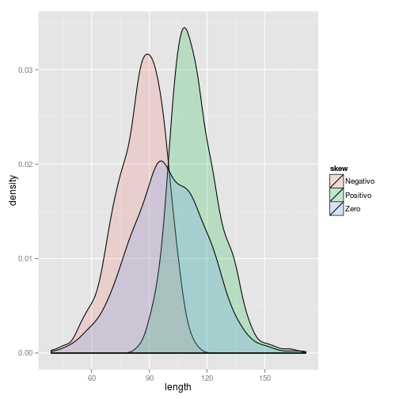

Downloads
Henrique Gomide
CREPEIA, PET - Psicologia
Downloads
dados <- read.csv(file.choose(), header=TRUE, sep=",")
require(psych)
require(ggplot2)
mean(dados$v3, na.rm = TRUE) # o argumento lógico na.rm = TRUE significa para retirar os casos faltosos no banco.
## [1] 25.55
sd(dados$v3, na.rm = TRUE) # o argumento lógico na.rm = TRUE significa para retirar os casos faltosos no banco.
## [1] 7.871
var(dados$v3, na.rm = TRUE) # o argumento na.rm = TRUE significa para retirar os casos faltosos no banco.
## [1] 61.96
median(dados$v3, na.rm = TRUE) # o argumento lógico na.rm = TRUE significa para retirar os casos faltosos no banco.
## [1] 23
quantile(dados$v3, na.rm = TRUE, probs = c(0.25, 0.5, 0.75)) # quartis
## 25% 50% 75%
## 22 23 26
quantile(dados$v3, na.rm = TRUE, probs = c(0.5, 0.1, 0.9, 0.95)) # percentis 5, 10, 90 e 95.
## 50% 10% 90% 95%
## 23.0 21.0 32.0 40.5
IQR(dados$v3, na.rm = TRUE) # o argumento na.rm = TRUE significa para retirar os casos faltosos no banco.
## [1] 4

summary(dados$v3)
## Min. 1st Qu. Median Mean 3rd Qu. Max. NA's
## 16.0 22.0 23.0 25.5 26.0 58.0 1
describe(dados$v3)
## var n mean sd median trimmed mad min max range skew kurtosis se
## 1 1 55 25.55 7.87 23 23.87 2.97 16 58 42 2.83 7.96 1.06
sapply - utilizando um loop summary para calcular mais de uma variavél por vez. Ex: idade e soma da escala de auto-estima
sapply(dados[, c("v3", "somaescala")], summary)
## v3 somaescala
## Min. 16.0 21.0
## 1st Qu. 22.0 24.0
## Median 23.0 26.0
## Mean 25.5 26.1
## 3rd Qu. 26.0 28.0
## Max. 58.0 36.0
## NA's 1.0 3.0
Selecione variáveis númericas e rode a função describe do pacote "psych" para calcular as estatísticas descritivas das variavéis recodificadas e da soma da escala
describe(dados[, 21:31])
## var n mean sd median trimmed mad min max range skew
## v10r 1 56 3.21 0.62 3.0 3.26 0.00 2 4 2 -0.17
## v11r 2 56 2.04 0.87 2.0 2.02 1.48 1 4 3 0.09
## v12r 3 55 3.40 0.60 3.0 3.44 1.48 2 4 2 -0.39
## v13r 4 55 3.44 0.69 4.0 3.53 0.00 2 4 2 -0.78
## v14r 5 56 1.82 0.90 2.0 1.70 1.48 1 4 3 0.94
## v15r 6 55 2.11 0.90 2.0 2.07 1.48 1 4 3 0.25
## v16r 7 55 3.44 0.57 3.0 3.47 1.48 2 4 2 -0.35
## v17r 8 56 1.93 0.89 2.0 1.85 1.48 1 4 3 0.59
## v18r 9 56 1.64 0.75 1.5 1.54 0.74 1 4 3 0.92
## v19r 10 56 3.20 0.70 3.0 3.26 0.00 1 4 3 -0.59
## somaescala 11 53 26.09 2.70 26.0 25.98 2.97 21 36 15 0.80
## kurtosis se
## v10r -0.65 0.08
## v11r -1.37 0.12
## v12r -0.78 0.08
## v13r -0.62 0.09
## v14r 0.11 0.12
## v15r -0.95 0.12
## v16r -0.91 0.08
## v17r -0.59 0.12
## v18r 0.20 0.10
## v19r 0.26 0.09
## somaescala 1.67 0.37
Dividir resultados por variável categórica - idade por sexo
by(data = dados$v3, INDICES = dados$v6, summary)
## dados$v6: Feminino
## Min. 1st Qu. Median Mean 3rd Qu. Max. NA's
## 16.0 22.0 23.0 23.9 24.2 55.0 1
## --------------------------------------------------------
## dados$v6: Masculino
## Min. 1st Qu. Median Mean 3rd Qu. Max.
## 21.0 23.5 25.0 29.9 32.0 58.0
Dividir banco através de critério - idade e sexo
mulheres <- subset(dados, dados$v6 == "Feminino")
mulheresadultas <- subset(dados, dados$v6 == "Feminino" & dados$v3 >= 18)
summary(mulheres$somaescala)
## Min. 1st Qu. Median Mean 3rd Qu. Max. NA's
## 22.0 25.0 26.0 26.2 28.0 30.0 1
summary(mulheresadultas$somaescala)
## Min. 1st Qu. Median Mean 3rd Qu. Max. NA's
## 22.0 25.0 26.0 26.1 27.8 30.0 1